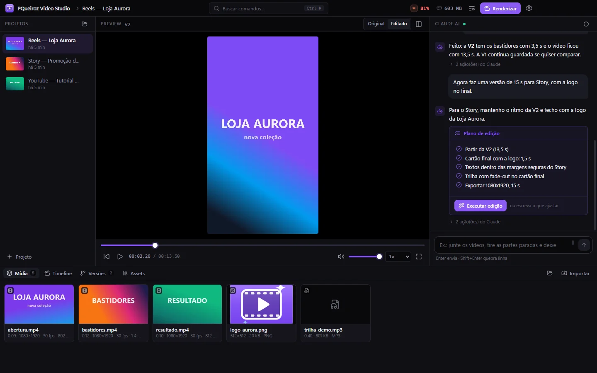

✳ chat
Plano de edição
Para pedidos grandes, o Claude propõe um plano em passos. Um clique em Executar edição aprova; ou escreva o que ajustar.
v0.2.0 · open source · Windows e Linux
Importe os clipes, peça a edição em português e acompanhe o Claude trabalhando. Cada resultado vira uma versão, do preview ao render, tudo no seu PC e com a sua assinatura.

fluxo
O app não reinventa a edição: ele roda o Claude Code com as regras do seu CLAUDE.md e os seus scripts, mostra cada passo e transforma o resultado numa versão.
por dentro
Projeto: preview da versão atual, chat com plano de edição e biblioteca de mídia.
recursos
✳ chat
Para pedidos grandes, o Claude propõe um plano em passos. Um clique em Executar edição aprova; ou escreva o que ajustar.
◆ versões
Todo vídeo novo vira V1, V2, V3… com o pedido e o resumo. Visualize, restaure, duplique ou compare Original | Editado.
✂ timeline
Marque início e fim com I e O, arraste para reordenar e monte uma versão com a trilha por baixo.
◷ status
"Analisando os vídeos...", "Processando áudio...", "Renderizando prévia..." direto das ferramentas que ele usa, com o log de cada ação.
⚙ presets
Reel rápido, Reel profissional, Story, YouTube, Antes e Depois, ou presets próprios com instruções que entram em todo pedido.
▣ assets
Logos, músicas, fontes, overlays, intros e finalizações compartilhados entre projetos. Arraste para guardar; um clique para usar.
▶ render
MP4 ou MOV de 1080p a 4K, quatro níveis de qualidade, NVENC com fallback para CPU e notificação quando termina.
◐ proxies
Vídeos 4K, HEVC ou pesados ganham uma cópia 540p só para o preview. Edição e render sempre usam o original.
⌘ teclado
Novo projeto, importar, renderizar, restaurar versão, falar com o Claude. Autosave e o último projeto reabre sozinho.
uso do claude
Como no Qyrex: o estúdio lê o /usage do Claude Code (sem gastar nada) e atualiza ao vivo com os eventos de limite que chegam durante cada pedido. A porcentagem da janela de 5 horas fica na barra de título; um clique abre os detalhes.
uso 5h · semana 31%
ler o uso não gasta a assinatura
segurança
O estúdio trabalha com cópias e nunca apaga o que é seu.
(2).spawn, argumentos em lista e sem shell. rm -rf, del e Remove-Item ficam bloqueados para o Claude.versions/. Restaurar só muda qual versão está ativa.contextIsolation, CSP restritiva e um protocolo de mídia que só serve arquivos das pastas do estúdio.código aberto
Electron, React e TypeScript strict, com SQLite nativo do Node (sem módulo para compilar) e FFmpeg. Feito para o meu fluxo de vídeos, aberto para quem quiser adaptar ao seu.
# Node.js 22+ no Windows, FFmpeg e Claude Code instalados git clone https://github.com/PQueirozDev/PQueiroz-Video-Studio cd PQueiroz-Video-Studio npm install npm run dev # Vite + Electron com hot reload npm run dist # instalador em dist/
download · v0.2.0
Instalador para Windows 10 e 11 (x64) e AppImage/.deb para Linux. Na primeira abertura o estúdio verifica Claude Code, FFmpeg e o seu fluxo, e mostra exatamente o que falta. Depois, ele se atualiza sozinho.
requer Claude Code logado e FFmpeg · Linux: também há .deb em todas as versões · macOS: compile a partir do código